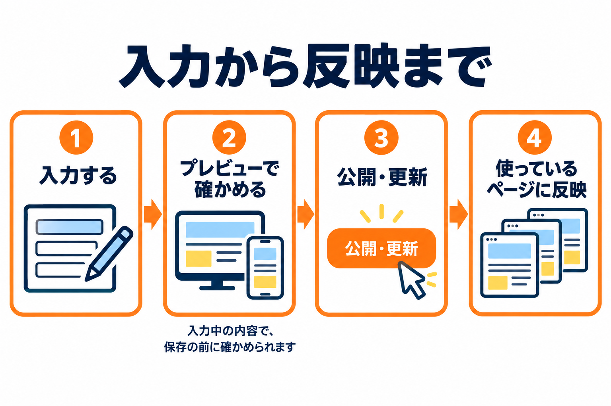
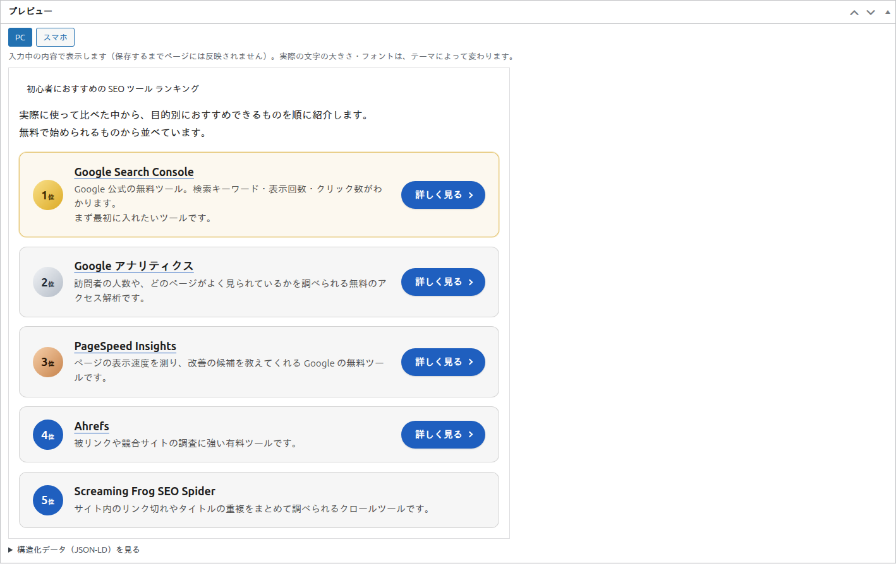
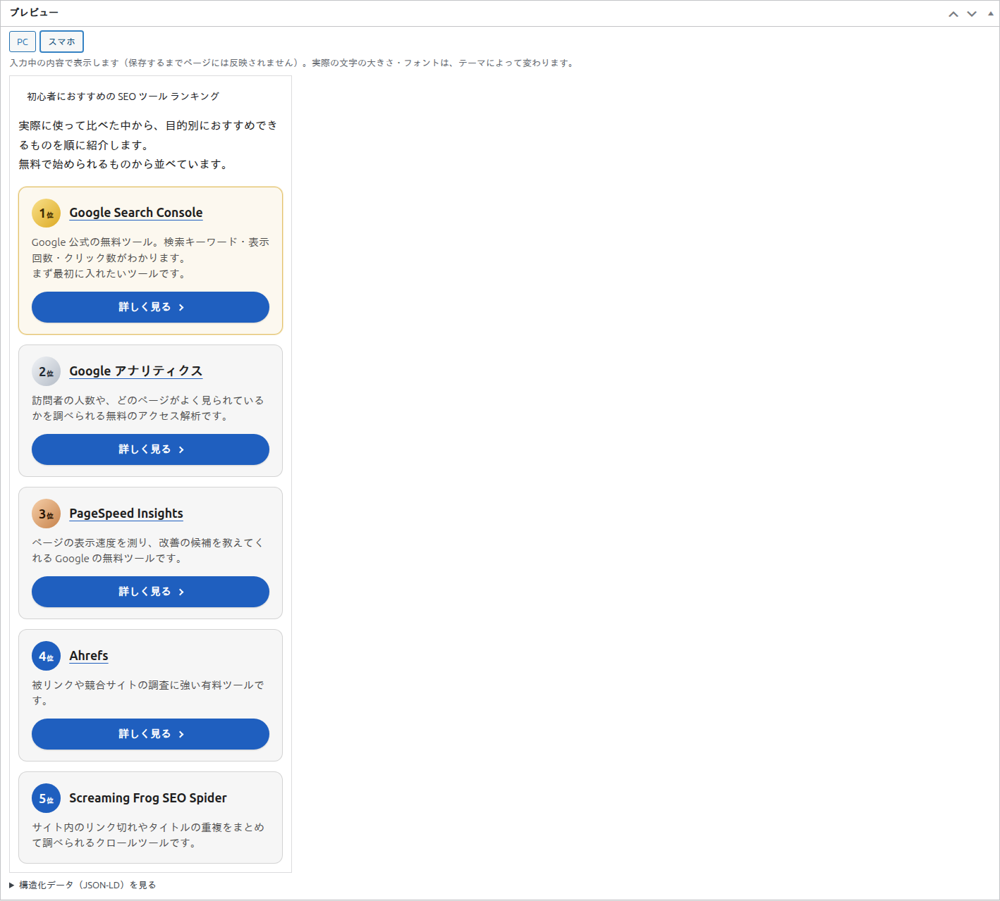
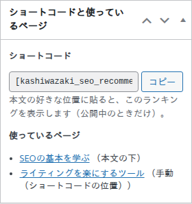
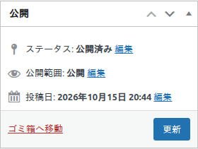

プレビューとショートコード
入力中の内容を保存の前に確かめる「プレビュー」と、ショートコードのコピー・使っているページを確かめる画面の説明です。

ランキングの編集画面には、入力中の内容を確かめるボックス「プレビュー」と、ショートコードと使っているページを見るボックス「ショートコードと使っているページ」があります。
ボックス「プレビュー」
入力している内容を、ページに表示されるのとほぼ同じ形で、その場で見られます。保存する前に確かめられるので、公開前の見た目の確認に使えます。

使い方
- 見出し・概要説明・順位・デザインなどを入力・変更すると、少し待ってから、プレビューが自動で更新されます。更新している間は、ボタンの右に「…」が出ます。
- 選んでいるデザインの型・ボタンの文言・リンクの設定は、入力中の内容がそのまま反映されます。色は、設定画面の「メインの色」と「1位〜3位の色」です。
- プレビューの中のリンクやボタンは、押しても開きません。
- 文字の大きさやフォントは、お使いのテーマによって変わります。
「PC」と「スマホ」
ボックスの上の 2 つのボタンで、プレビューの枠の幅を切り替えます。スマホで見たときの形を確かめられます。
| ボタン | 結果 |
|---|---|
| PC | 広い幅で表示します（既定）。 |
| スマホ | 狭い幅で表示します。説明とボタンが縦に並ぶ形などを確かめられます。 |

構造化データ（JSON-LD）を見る
プレビューの下の「構造化データ（JSON-LD）を見る」をクリックすると、いまの入力内容で出力される構造化データが表示されます。URL の部分は例です。実際には、ランキングを表示したページの URL になります。構造化データの出力がオフのとき（設定画面かこのランキングの「出力」のチェックがオフのとき）は、ここには何も出ません。
プレビューの表示とメッセージ
| 表示 | 意味・対処 |
|---|---|
| 名称を入力すると、ここにプレビューが表示されます。 | 名称のある順位が 1 つも無いときの表示です。名称を入力してください。 |
| プレビューを作れませんでした。 | プレビューの更新に失敗したときの表示です。通信の状態を確かめ、入力をもう一度変えてみてください。それでも出ないときは、画面を開き直してください。 |
| …（ボタンの右） | プレビューを更新している間の表示です。 |
ボックス「ショートコードと使っているページ」
画面の右側にあるボックスです。ランキングを本文に置くためのショートコードと、このランキングをどのページが使っているかが分かります。

ショートコード
このランキングのショートコード（[kashiwazaki_seo_recommended_ranking id="数字"] の形で、数字はランキングごとに違います）が表示されます。
- 「コピー」をクリックします。ボタンの文字が、少しの間「コピーしました」に変わります。
- ページの編集画面で、本文の表示したい位置に貼り付けます。
- 欄は書き換えられません。欄をクリックすると、全体が選択されるので、手でコピーすることもできます。
- ショートコードは、公開中のランキングだけを表示します。
- ショートコードは、設定画面で「ランキングを選べる投稿タイプ」にチェックしていない投稿タイプのページでも使えます。
- ページごとに選んだランキングを本文の途中に置く、id のないショートコードについては、投稿の編集画面のボックスのページを見てください。
使っているページ
このランキングを使っているページが、一覧で表示されます。ページ名をクリックすると、そのページの編集画面が開きます。
| 表示 | 意味 |
|---|---|
| ページ名（本文の下）／（本文の上） | そのページの「表示位置」で、このランキングを選んでいます。 |
| ページ名（手動（ショートコードの位置）） | そのページで表示位置を「手動」にして選んでいます。 |
| ページ名（ショートコード） | そのページの本文に、このランキングの id を書いたショートコードがあります。 |
| （…・下書き）などの状態 | 公開以外の状態のページには、その状態が付きます。 |
| （表示する権限のないページ） | ほかの人の下書きなど、お使いのアカウントでは見られないページです。ページ名は表示されません。 |
| ほか N 件 | 一覧に出るのは 50 件までです。それより多いときの残りの数です。 |
| まだどのページでも使われていません。 | このランキングを使っているページがありません。 |
- 表示位置を「表示しない」にしたページも、ランキングを選んでいれば一覧に出ます。
- ゴミ箱に入ったページは、一覧に出ません。
公開・更新したときの動き
右側の「公開」ボックスで「公開」や「更新」をクリックすると、そのランキングを使っているすべてのページの表示が、新しい内容に変わります。ページのキャッシュを使うプラグインがある場合も、そのページのキャッシュを消す合図を出します。

- 公開・更新：ページに表示されます。ただし、公開できる条件を満たしているときだけです。
- 下書き保存：ページには表示されません。
- 公開の日時を未来にして保存すると、公開の予約になります。
- ゴミ箱へ移動：ページには表示されなくなります。ゴミ箱から戻すと、また表示されます。